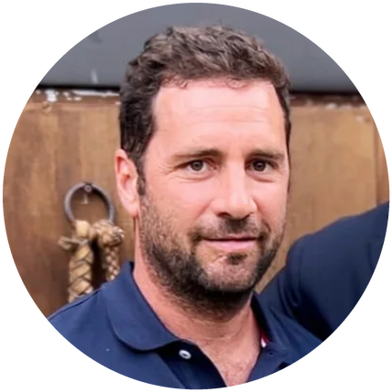

Italia Polo Challenge è organizzato da The Chukker Company, con il patrocinio della Federazione Italiana Sport Equestri.
The Chukker Company nasce per portare il polo fuori dal campo tradizionale: sulla neve, in città, davanti al mare. Ogni tappa di Italia Polo Challenge è pensata come un evento a sé — location iconiche, squadre internazionali di altissimo livello tecnico, un pubblico che unisce appassionati di sport e curiosi del mondo del lusso.
Il circuito lavora sotto il patrocinio della Federazione Italiana Sport Equestri e nel tempo ha costruito un piano di comunicazione strutturato in tre fasi — dalla creazione dell'attesa, alla copertura in diretta, fino alla rassegna stampa post-evento — con centinaia di uscite editoriali per ogni tappa.
Fondatore di The Chukker Company, guida la visione del circuito: dalla scelta delle location alla costruzione delle partnership che rendono possibile ogni tappa.

Responsabile sportivo del circuito: selezione delle squadre, standard tecnici e organizzazione in campo di ogni torneo, dalla neve alla sabbia.
Italia Polo Challenge si svolge sotto il patrocinio della FISE, a garanzia degli standard tecnici e sportivi di ogni tappa del circuito — e con l'obiettivo, a lungo termine, di riportare il polo su neve tra gli sport delle Olimpiadi Invernali.
Scrivici per informazioni su partnership, hospitality e materiali stampa.
Contattaci